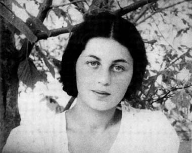

Anna Larina

Introduction
Some prisoners were arrested simply on the basis of their associations with other people. Anna Larina was arrested in 1937 as the wife of an “enemy of the people.” Her husband, Nikolai Bukharin had been one of the highest ranking Communist leaders in the Soviet Union and one of the competitors for power after Lenin’s death. Stalin gradually shoved Bukharin aside until having him arrested in 1937, subjected to one of the great Moscow “show trials” and executed. Anna Larina was also arrested and remained in the Gulag system until the mid-1950s.
Arrest
“In December 1938, I was returning to an ‘investigative prison’ in Moscow following a year and a half of arrests and imprisonments. First came exile Astrakhan, then arrest and imprisonment there; next, I was sent to a camp in Tomsk for family members of so-called enemies of the people; on the way, I was held in transit cells in Saratov and Sverdlovsk; after several months in Tomsk, I was arrested a second time and sent to an isolation prison in Novosibirsk; from Novosibirsk, I was transferred to a prison near Kemerovo, where after three months I was taken out and put on the train for Moscow.”
Labor
In her memoir, Larina mainly writes of her first years in the Gulag, though she was there for twenty. For much of this time, because of her status as the wife of Bukharin, she was kept under close surveillance and was not allowed out to perform labor. Instead, much of her time was spent dealing with the grinding boredom of doing nothing. “By this time, I was an experienced zek [prisoner], having already been detained in many prisons: Astrakhan, Saratov, Sverdlovsk, Tomsk, Novosibirsk. I had become accustomed to an isolated existence without books, paper, or pencil, unable to do anything but string together rhymes and memorize them by endless repetition, read from memory the verses of my favorite poets.”
Suffering
“My cell, designed to hold four people, contained two sets of double bunks made of wood, with a little walkway between the planks. Yet I would be locked in alone. A tiny grated window, little more than a glass slit just under the ceiling, admitted no daylight. A dim electric light would burn around the clock. When we had first come below ground, I saw a rat running through the space between the window’s double panes of glass, another one scampering over the planks of one of the lower bunks. I took off my soaked slippers, put them on an upper bunk, and set to work, standing ankle deep in the water. Having bailed out the water I entered the cell. The guard locked the door, the bolt clanked, the lock clicked, the keys jangled. I had learned, by this time, not to be surprised by anything.”
Propaganda
“My cell, designed to hold four people, contained two sets of double bunks made of wood, with a little walkway between the planks. Yet I would be locked in alone. A tiny grated window, little more than a glass slit just under the ceiling, admitted no daylight. A dim electric light would burn around the clock. When we had first come below ground, I saw a rat running through the space between the window’s double panes of glass, another one scampering over the planks of one of the lower bunks. I took off my soaked slippers, put them on an upper bunk, and set to work, standing ankle deep in the water. Having bailed out the water I entered the cell. The guard locked the door, the bolt clanked, the lock clicked, the keys jangled. I had learned, by this time, not to be surprised by anything.”
Solidarity
Anna Larina learned of the death of her husband, Bukharin, from a fellow prisoner who had no idea who she was. They communicated by tapping on the walls of their cells. “’The bastards murdered Bukharin,’ I heard again, and my doubts faded away. Every single letter of his sentence, like a metal weight, banged into my brain. Although it would be best to cut off the conversation, since I still feared this might be provocation, the temptation was too great. I had a passionate desire to find out as much as I could. During the following days, I grew attached to this condemned man who knew the true story of the trials and loved Nikolai Ivanovich still. In the evenings, listening to his distinct tapping on the wall, I could not reconcile the firm even tap of his hand with the death sentence. When I heard his last words I was deeply shaken.”
Conflict
“After about two weeks, my cellmate, Lebedeva, was called out for an interrogation. When she returned to the cell, she looked at me in a new way, coldly and disdainfully, and suddenly hissed, ‘At least I know why I’m in jail. My father was a big merchant, he was a counterrevolutionary, no revolutionary, and I hate your revolution as much as he did. What Stalin is, that’s what Bukharin was. I hate you all alike!’ She lifted her hand to strike me, but changed her mind. Immediately, she was removed from the cell. Shaken by this encounter, I broke down and cried. This business with Lebedeva was hard to bear not only because I finally realized that she had informed on me but also because I had opened up to a person who did not share my pain, who, on the contrary, hated everything I held dear.”
Guards
“This interrogator’s ridiculous, senseless slander was more insulting than his vulgar abuse, but, since I now understood that I was dealing only with a lowlife but also with a mentally limited clod, I became indifferent to his stupid, loudmouthed accusations. ‘Such insolence!’ Skvirsky bellowed. ‘She dares state that Bukharin was not a counterrevolutionary! There is no place for you on Soviet soil! Shoot her! Shoot her!’ I felt the hopelessness of my situation, but this made me bolder, more decisive. I was able to shout contemptuously at the top of my voice, ‘It’s you who have no place on Soviet soil, not me! It’s you who should sit behind bars, not me! Shoot me right now! I don’t want to live!’ The interrogator fell silent, and I believe I detected a glimmer of respect for me. He lifted the telephone receiver and said indifferently, ‘Take away the prisoner.’
Survival
“Thus passed my days, faceless and gray, equally closed off from natural light. I realized that I had better think up some kind of activity to drive away the black thoughts. I tried to get permission to receive books, but without success. Once, noticing a rusty nail on the floor in a corner of the cell, I scratched out sixty-four squares on the bed boards and made checkers of two different shapes out of bread, one for my side, one for the opponent. But every night, while I was asleep, the small fry of the rats and mice, which I had not taken into account, gobbled up my checkers. Ultimately, I preferred to eat the bread myself.”
Fates
Larina was released from the Gulag system in 1959 after Stalin’s death, ill with tuberculosis, after having spent almost twenty years of her life there. She did not see her son for 18 years. She devoted the rest of her life to clearing her husband’s name. He was finally “rehabilitated” and cleared of all charges in 1988 – fifty years after his death. In 1988, she gave a speech at a conference commemorating the hundredth anniversary of Bukharin’s birth given by the Institute of Markism-Leninism of the Communist Party Central Committee.
 Anna Larina
Anna Larina Bukharin Family Portrait
Bukharin Family Portrait Nikolai Bukharin's Arrest Record
Nikolai Bukharin's Arrest Record Nikolai Bukharin Photograph
Nikolai Bukharin Photograph Cell Door in Lubyanka Prison
Cell Door in Lubyanka PrisonPrisoners
- Olga Adamova-Sliozberg
- Nina Pavlova Aminova
- Anna Andreeva
- George Bien
- Aleksandr Borin
- Edward Buca
- Boris Chetverikov
- Alexander Dolgun
- Nina Gagen-Torn
- Eugenia Ginzburg
- Gustav Herling
- Evfrosiniia Kersnovskaia
- Lev Kopelev
- Anna Larina
- Galina Ivanova Levinson
- Alfred Martinovich Mirek
- Margarete Buber Neumann
- John Noble
- Dimitri Panin
- Susanna Pechuro
- Evgeniia Michailovna Peunkova
- Lev Razgon
- Jacques Rossi
- Joseph Scholmer
- Thomas Sgovio
- Danylo Shumuk
- Michael Solomon
- Vladimir Tchernavin
- Alla Tumanova